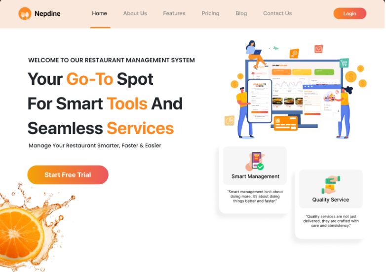

Nepdine
Restaurant management system
Nepdine is a restaurant management system designed to simplify everyday restaurant operations through a clear and intuitive interface. The system brings key tasks such as table reservations, order management, menu management, staff coordination, and customer interactions into one streamlined platform.
As the UI/UX designer, I focused on creating a clean, efficient, and easy-to-navigate experience, with clear information hierarchy and consistent interactions that help restaurant staff manage tasks quickly and effectively.

- Role
- UI/UX Designer — designer on the project
- Dates
- 07/2025 – 12/2025 · 6 months
- Platform
- Responsive web · owner-facing site and staff-facing product
- Scope
- Table reservations, order processing, menu management, staff coordination, customer experience
- Tools
- Figma, Illustrator
The problem
Restaurants often still rely on paper, memory, and disconnected processes to keep things running. Reservations sit in a book, orders move through handwritten tickets, and managers have little visibility into what happened until much later.
Nepdine brings these pieces into one system. The challenge was not simply to digitise each task, but to connect them into one flow — from reservation, to table, to order, to bill — without making the work slower for the people using it.
How I worked
I started with the service, not the screens. I mapped the restaurant workflow first and identified the core chain: reservation → table → order → bill. This became the foundation for the product structure.
I designed for two very different audiences. The landing page speaks to restaurant owners who are deciding whether to use Nepdine. The product speaks to staff who need to move quickly during a busy shift. They share the same identity, but they need very different experiences.
I designed the product before the marketing. I wireframed the staff experience first and built the landing page around what the product could actually deliver.
I tested the most important moments. In Figma, I prototyped the reservation-to-seating flow to explore whether a host could handle a walk-in and assign a table without losing their place in the floor plan.
Why it looks like this
I wanted Nepdine to feel more like a restaurant product than a piece of accounting software.
The owner-facing experience uses warmer colours and food imagery to create a sense of familiarity and trust. Inside the product, I stripped most of that away. Staff shouldn't have to navigate decoration when they're trying to take an order or find a table during a busy service.
The visual language changes with the context, while the overall identity stays consistent.
What I would change
The landing page still leans quite heavily on visual decoration. If I continued working on Nepdine, I'd test whether the first screen should focus more on showing evidence of the product its dashboard, workflow, or measurable benefits — rather than creating appetite through imagery.
The question I'd want to answer is simple: what makes a restaurant owner trust Nepdine enough to hand it their floor?